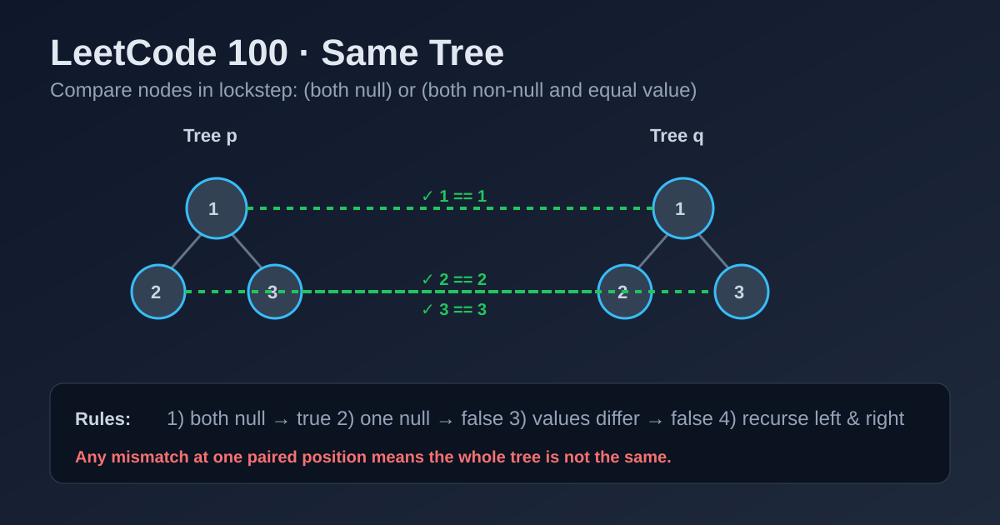

LeetCode 100: Same Tree (Synchronized DFS / BFS Pair Check)
LeetCode 100TreeDFSBFSToday we solve LeetCode 100 - Same Tree.
Source: https://leetcode.com/problems/same-tree/

English
Problem Summary
Given roots p and q, determine whether two binary trees are structurally identical and every corresponding node has the same value.
Key Insight
The comparison must be done in lockstep: at each position, both nodes must be null together or non-null with equal value, then both left children and both right children must also match.
Brute Force and Limitations
A weak idea is serializing trees and comparing strings. It works only if null markers and traversal choice are carefully designed, and it adds unnecessary memory overhead. Direct pairwise traversal is simpler and safer.
Optimal Algorithm Steps
1) If both nodes are null, they match at this branch.
2) If exactly one is null, return false.
3) If values differ, return false.
4) Recursively compare left children and right children.
5) Return true only if both sides are true.
Complexity Analysis
Time: O(n), where n is number of compared nodes.
Space: O(h) recursion depth, worst-case O(n) for skewed tree.
Common Pitfalls
- Checking only values but forgetting structure (null mismatch).
- Using || instead of && when combining left/right subtree results.
- Missing early returns on null/value mismatch.
Reference Implementations (Java / Go / C++ / Python / JavaScript)
class Solution {
public boolean isSameTree(TreeNode p, TreeNode q) {
if (p == null && q == null) return true;
if (p == null || q == null) return false;
if (p.val != q.val) return false;
return isSameTree(p.left, q.left) && isSameTree(p.right, q.right);
}
}func isSameTree(p *TreeNode, q *TreeNode) bool {
if p == nil && q == nil {
return true
}
if p == nil || q == nil {
return false
}
if p.Val != q.Val {
return false
}
return isSameTree(p.Left, q.Left) && isSameTree(p.Right, q.Right)
}class Solution {
public:
bool isSameTree(TreeNode* p, TreeNode* q) {
if (p == nullptr && q == nullptr) return true;
if (p == nullptr || q == nullptr) return false;
if (p->val != q->val) return false;
return isSameTree(p->left, q->left) && isSameTree(p->right, q->right);
}
};class Solution:
def isSameTree(self, p: Optional[TreeNode], q: Optional[TreeNode]) -> bool:
if not p and not q:
return True
if not p or not q:
return False
if p.val != q.val:
return False
return self.isSameTree(p.left, q.left) and self.isSameTree(p.right, q.right)var isSameTree = function(p, q) {
if (p === null && q === null) return true;
if (p === null || q === null) return false;
if (p.val !== q.val) return false;
return isSameTree(p.left, q.left) && isSameTree(p.right, q.right);
};中文
题目概述
给你两棵二叉树的根节点 p 和 q，判断它们是否“完全相同”：结构一致，且对应位置节点值相同。
核心思路
必须“同步对位比较”。每个位置只要出现以下任一情况就可直接判 false：一个为空一个不为空；两个值不相等。只有左右子树都匹配，整棵树才匹配。
暴力解法与不足
可以把两棵树序列化成字符串后比较，但你必须非常小心空节点标记与遍历顺序，否则会误判；而且多了额外序列化空间。直接递归对位比较更自然。
最优算法步骤
1）两个节点都为空：当前分支相同。
2）仅一个为空：立刻 false。
3）值不同：立刻 false。
4）递归比较左子树与右子树。
5）左右都为 true 时返回 true。
复杂度分析
时间复杂度：O(n)。
空间复杂度：O(h)（递归栈），最坏退化为 O(n)。
常见陷阱
- 只比较值，不比较空节点结构。
- 合并子问题结果时误用 ||。
- 没有在空节点/值不等时尽早返回。
多语言参考实现（Java / Go / C++ / Python / JavaScript）
class Solution {
public boolean isSameTree(TreeNode p, TreeNode q) {
if (p == null && q == null) return true;
if (p == null || q == null) return false;
if (p.val != q.val) return false;
return isSameTree(p.left, q.left) && isSameTree(p.right, q.right);
}
}func isSameTree(p *TreeNode, q *TreeNode) bool {
if p == nil && q == nil {
return true
}
if p == nil || q == nil {
return false
}
if p.Val != q.Val {
return false
}
return isSameTree(p.Left, q.Left) && isSameTree(p.Right, q.Right)
}class Solution {
public:
bool isSameTree(TreeNode* p, TreeNode* q) {
if (p == nullptr && q == nullptr) return true;
if (p == nullptr || q == nullptr) return false;
if (p->val != q->val) return false;
return isSameTree(p->left, q->left) && isSameTree(p->right, q->right);
}
};class Solution:
def isSameTree(self, p: Optional[TreeNode], q: Optional[TreeNode]) -> bool:
if not p and not q:
return True
if not p or not q:
return False
if p.val != q.val:
return False
return self.isSameTree(p.left, q.left) and self.isSameTree(p.right, q.right)var isSameTree = function(p, q) {
if (p === null && q === null) return true;
if (p === null || q === null) return false;
if (p.val !== q.val) return false;
return isSameTree(p.left, q.left) && isSameTree(p.right, q.right);
};
Comments